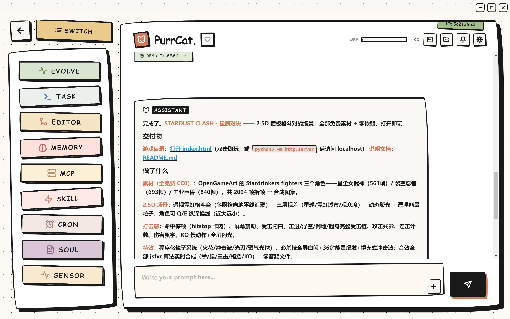
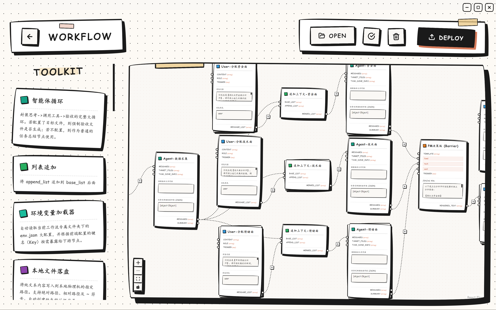
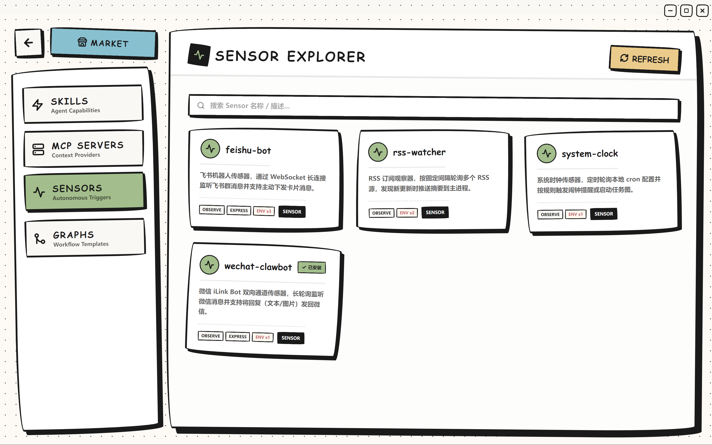
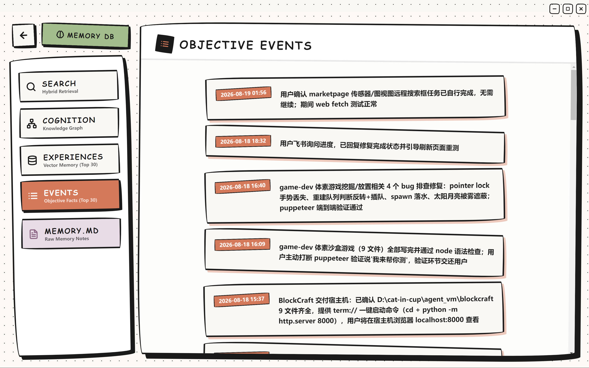
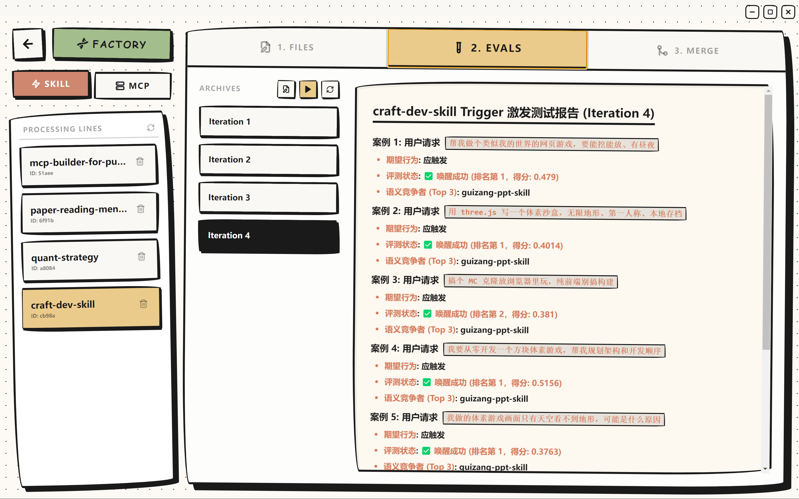
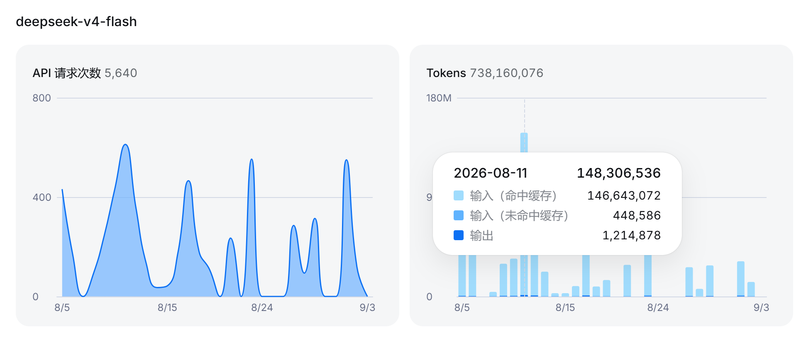
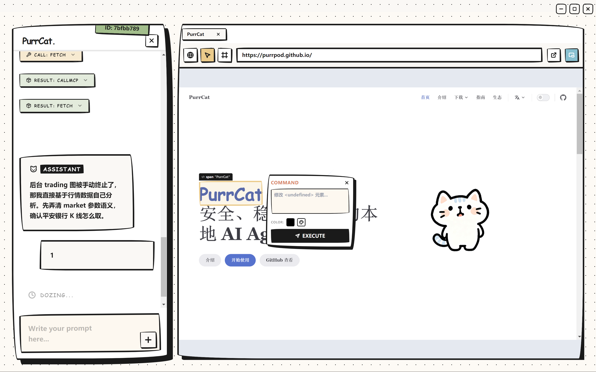

传感器主动感知
Token 经济学
无代码拓展生态
ACP与MCP协议兼容
混合记忆与知识图谱
Harness DAG 工作流
沙盒级宿主机安全
Trace2Skill 自进化
PurrCat 长什么样
- under the fur -
1
先睹为快 · 主界面
PurrCat 不是又一个特定场景的 Agent 应用，而是一套完整的 Agent 基础设施。设计初心：在保障宿主机绝对安全的前提下，打造一个拥有私人工作空间、能够自由活动的个人 Agent——你在场时认真工作，你离开时自主干活。
- Electron 桌面端开箱即用，内置独立浏览器
- Git 式会话分支：new / branch / switch 自由切换
- 一切皆插件：工具、技能、传感器、任务图均为插件
- 配置驱动：改改 JSON / YAML 就能重写 Agent 行为

2
可编排的 Harness 工作流引擎
连 Agent 的思维链本身都是可编排的——复杂任务被拆解为一张可流转的任务图（DAG），由主 Agent 统一分配任务，避免 Agent 间自然语言对话带来的 Token 冗余。
- JSON 驱动热插拔：单个 JSON 装载，运行时热更新
- 多态节点矩阵：条件路由、人工干预、模板渲染、图片生成
- PARADIGM.yaml：声明式规则重写 Agent 主循环
- 状态机安全回滚：任意节点注入指令、断点重连

3
主动感知的传感器机制
绝大多数 Agent 只能被动等在对话框里「你问我答」。PurrCat 的传感器网关将外部世界与 Agent 本体直接连通，事件统一入口推送，Agent 也可以反向输出到任意通道。
- 独立子进程隔离：单个传感器崩溃不影响主进程
- Stdio 管道 JSON-RPC：不占用任何网络端口
- 内置 System（心跳）、Feishu（WebSocket）、RSS 传感器
- 低成本实现语音助手、RSS 订阅、社媒打通

4
多层记忆系统
解决传统 Agent「记不住事」的问题。基于人脑科学分层设计：短时工作记忆、MEMORY.md 核心档案，加上由三大引擎构成的长期记忆库 PurrMemo。
- 事件记忆：SQLite + FTS5，时间线客观溯源
- 语义记忆：ChromaDB 向量库存储可复用经验
- 认知图谱：NetworkX 实体关系图，动态强化/削弱
- RRF 混合检索 + 仿生遗忘机制自动清理

5
自进化能力
得益于自进化工厂（Evolve Factory），Agent 能实现能力的自我生产与迭代，形成「执行、沉淀、再执行」的能力飞轮——用得越多，积累的技能、工具与感知渠道越丰富。
- Trace2Skill：把成功执行轨迹固化为可复用技能
- MCP 工具自建：Agent 自行搭建工具并热加载
- 传感器自建：自行开发感知渠道，即插即用
- 新生技能需通过评估器质量验证方可入库

6
KV Cache 与 Token 经济学
稳定的 KV Cache 命中率是系统的生命线：一次缓存未命中不仅导致响应时间暴增，更带来极大的 Token 资金消耗。PurrCat 从架构上把它管得明明白白。
- API Key 生命周期强绑定，缓存命中率实测 99%+
- 记忆摘要经济学：浓缩摘要替代全量历史参与推理
- DAG 降本：消除多 Agent 间自然语言通信冗余

7
面向精准交互的前端设计
面对网页设计、SVG 设计等创作类任务，不再需要用大量自然语言反复描述「那个左上角的蓝色按钮」——反馈精确到具体组件，缩短「描述、修改、再确认」的交互链路。
- DOM 级精准交互：内置浏览器中直接选取元素定位
- 可视化 DAG 画布：节点拖拽编排、JSON 一键导入导出

心动不如行动
- get purrcat -选择你的操作系统，一条命令快速部署：
terminal
curl -fsSL https://raw.githubusercontent.com/PurrPod/purrcat/main/install.sh | bash